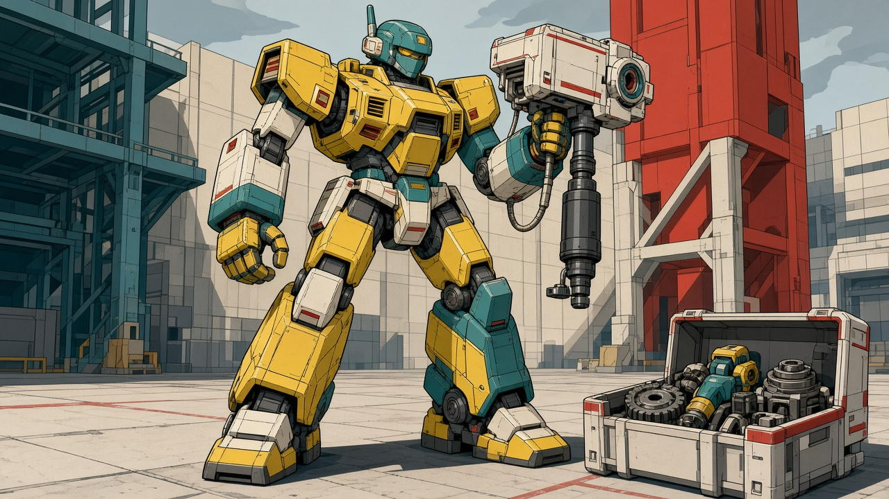
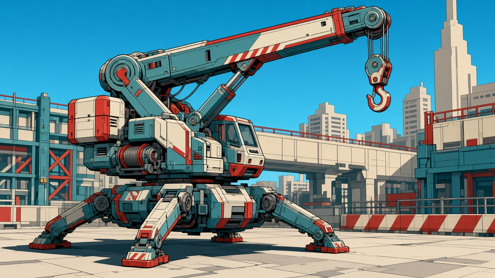

下一批：城市职业机
沿原有造型细化。预算二号突出维修工具、通用替换件和低成本维护；市政吊装机突出吊臂、履带、稳定腿及收拢姿态。
预算二号救援机
低费维修、撤离与补给；保留黄绿工具机、替换色小腿及模块化工具。

沿用的原设计参考

市政吊装机
吊装、推拉与施工；保留吊臂、履带、稳定支腿及单驾驶舱。

沿用的原设计参考

两张为本批新源稿。隐藏支腿、结构尺寸与连续作业仍需后续多视/模型核对；已确定设计的交付与主工程接入另有记录。
沿原有造型细化。预算二号突出维修工具、通用替换件和低成本维护；市政吊装机突出吊臂、履带、稳定腿及收拢姿态。
低费维修、撤离与补给；保留黄绿工具机、替换色小腿及模块化工具。

吊装、推拉与施工；保留吊臂、履带、稳定支腿及单驾驶舱。

两张为本批新源稿。隐藏支腿、结构尺寸与连续作业仍需后续多视/模型核对；已确定设计的交付与主工程接入另有记录。